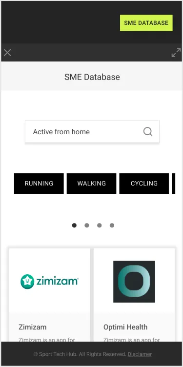
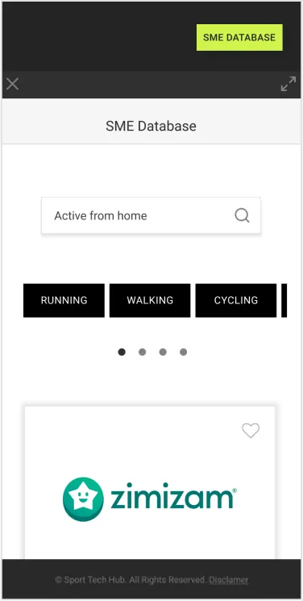
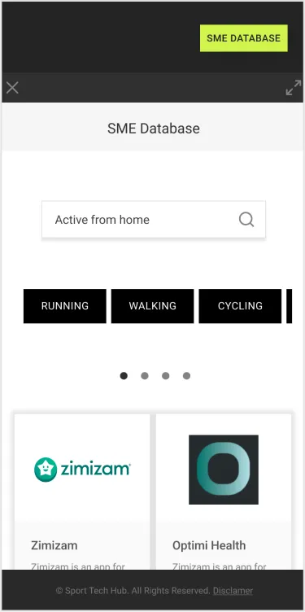
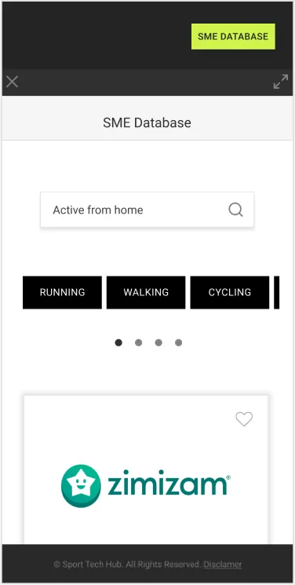

The Sport Tech Hub website needed to be adapted to make sure it appeals to all its audiences by providing clear offerings.The design of the website and its usability would be central to its success and would allow the promotion of Sport Tech Hub across the UK. Success would be a design that is easy to navigate, understand and provides clarity to their end users.
I worked alongside King and Michelle for Experience Haus in 2020. The team worked together on the first stages of the user experience design. Later on, Michelle worked on the user flow, King on the sketches and Lo-fi wireframes. I worked on the User Interface with Hi-fi wireframes and the prototype.
After a user research exploring the current website, a Competitor Analysis and a few Users Interviews we found:
Following our findings, we created a user persona that helped us to understand what type of improvements we could make to the user interface. To avoid an overwhelming feeling when users search for information, our goal was to improve the user experience by providing clear and precise advice so they can make the best decision without stress.
After our research and findings, we thought the best way to improve the user experience was to focus the redesign of Sport Tech Hub’s website on users looking for technology solutions to keep their teams active. Therefore we decided that the best solution was to highlight the database and make it easier to use and navigate.
We established that we wanted the database and sign-up process to be the main highlight of the redesign. Through the user flow, we tried to understand the minimum necessary steps needed to achieve our goal.
The next step in the process was to deliver digital wireframes from the sketches to explore what things would look like when scaled to size. Font and button sizes gain priority over theoretical hierarchy and placement. In addition, the sidebar would work as if it is a mobile device, but on a full screen.
Once the prototype was done, the usability test would test the application. The feedback was very positive on the general use of white space and re-design of the general website. However, the database sidebar was perceived as unuseful as the user preferred a bigger screen to view the search results. In addition to this, the user added that it would be helpful to further refine the search engine to narrow down the search results.
The idea was to determine if the side bar is helpful to users finding service providers quicker and to increase membership sign ups
As Sport Tech Hub continues to grow and develop, they are always looking for ways to make its website easier to navigate and understand. In this redesign, we decided to highlight the database as the main focus of Sport Tech Hubs’ website design. We wanted to make sure that users are able to find the information they need quickly and easily. We achieved this by making the website more user-friendly and aesthetically pleasing. These changes make it easier for users to find what they are looking for.
As the redesign process unfolded, we began to see the many ways in which we could showcase the database while providing users with the necessary information they need. For example, we saw that we could incorporate a search feature into the website that will make it easier for users to find the information they need quickly.
We designed a basic sign-up process to make it simpler for new users to get involved. However, I think we can do better by adding social media options to make it easier for people to register. Also, I would remove their SME database from the sidebar to its own full page to make the page more user-friendly as it can be confusing for someone who isn’t familiar with the site. I also think I can do better by designing two flows based on the target audience. The first flow would be for innovators looking for sports solutions while the second flow would be for start-ups looking to make people more active. By incorporating these new features into the website we will ensure it meets the needs of the users and gives them the best experience possible.

Thinking of a user-centred design, we made some changes to the header. Users need easy access to the SME database and a quick way to get in touch.The company wanted to maintain its brand colours. However, to facilitate clarity and accessibility, we changed the combination adding a light background and ensuring the text contrasts suitably against its background colour.

The final re-design makes use of more white space to allow the content to breathe and the eye to wander and discover. A few splashes of colour introduce a fresh look and feel and link back to the brand itself. The use of sharp edges on buttons and elements derives from the square logo and is used throughout the pages.
The icons are outlined from iconify’s library because of their cleanness and contemporary look and feel.
We decided to use Roboto typeface because it is a geometric sans-serif that stands for its legibility and we think it engages with sport and tech.
Besides, the scope of weight on its fonts allows us to create a hierarchy and also a consistent layout.
aAbBcCdDeEfFgGhHiIjJkKlL
mMnMoOpPqQrRsStTuUvV
wWxXyYzZ.
 
